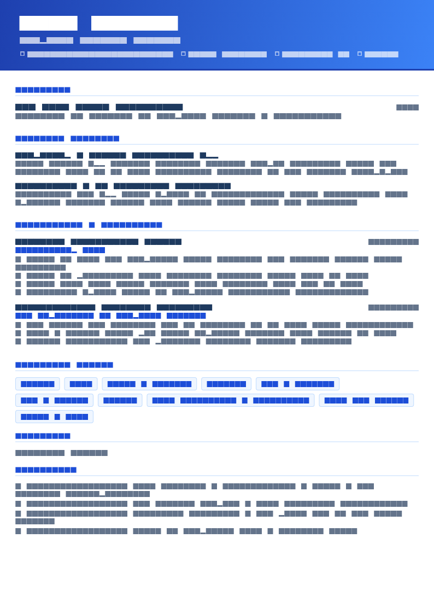

Objective, summary, profile: what the words mean
Three labels, two actual devices, and a lot of confused advice.
| Objective | Summary | |
|---|---|---|
| States | What you want | What you are and have done |
| Serves | The applicant’s need to explain a target | The reader’s need to place you |
| Works when | Your history does not imply your target | Your history speaks for itself |
| Fails when | It contains no evidence | You have no relevant history yet |
| Length | 2–3 lines | 3–4 lines |
“Profile” is just another word for summary; use the heading “Professional Summary” instead, since it segments more reliably when your resume is parsed.
The useful distinction is not stylistic. An objective spends your most valuable four lines describing your needs to someone who is evaluating whether you meet theirs. That is a bad trade — unless the reader genuinely cannot work out what you are applying for, in which case naming it is the most useful thing you can do.
The five situations where an objective beats a summary
- Entry level with no relevant history. Nothing on the page implies a target, so state it.
- A career change. Your most recent title actively points the wrong way; an objective corrects it in the first line.
- Relocation or a change of market. Location and work authorisation are screening questions, and answering them up front removes a reason to set you aside.
- Returning after a break. A brief statement of intent is more comfortable to read than a summary that begins two years ago.
- A specific programme or scheme. Internships, graduate rotations, apprenticeships, residencies and fellowships often have cohort requirements, so naming the exact programme and intake is genuinely useful.
Outside those five, write a summary. There are 25 worked examples in resume summary examples.
Two lines of evidence, then one clause naming what you are seeking. You get the credibility of a summary and the direction of an objective, in the same space. Almost every example below is built this way.
The formula
[Qualification or current status] + [one concrete piece of evidence] + [the specific role or field you are targeting].
The middle element is the one people omit, and it is what separates a working objective from a wish. Without evidence, an objective is a sentence about your feelings.
No evidence
To obtain a challenging position in a reputable organisation where I can utilise my skills and knowledge for the mutual growth of the company and myself.
With evidence
Computer engineering graduate (B.E., 2026, 8.4/10 CGPA) with a final-year project handling 50,000 transaction records in Python and PostgreSQL. Seeking a backend or data engineering role.
Entry level and graduate objectives
Computer science graduate (BSc, 2026) with two web development internships and a deployed capstone serving 400 users. Seeking a backend or full-stack graduate role.
Mechanical engineering graduate (B.E., 2026, 78%) with a final-year project on heat exchanger efficiency and a 12-week internship at a Tier-1 automotive supplier. Seeking a design or production engineering role.
Business administration graduate with a finance concentration and a six-month accounts payable internship, where I automated a weekly reconciliation and saved four hours a week. Seeking a graduate finance analyst position.
New graduate registered nurse (BSN, 2026), NCLEX-RN passed, BLS and ACLS certified, with 820 supervised clinical hours across five specialties. Seeking a medical-surgical or step-down nurse residency.
Customer-facing professional with two years of retail shift leadership, handling 150+ transactions a shift as keyholder and training four new starters. Seeking an entry-level customer support role.
Every one names a qualification, a fact and a target. Note how specific the targets are — “backend or full-stack graduate role” rather than “a position in IT”. More on the accompanying document in entry level resume.
Career change objectives
Operations manager moving into data analytics, with a completed analytics certificate and 18 months of applied SQL and Power BI work inside my current role. Seeking an analyst position where warehouse and supply chain domain knowledge is an asset.
Secondary teacher of eight years moving into instructional design, with three published e-learning modules in Articulate Storyline and a completed UX writing course. Seeking a learning designer role in corporate or edtech.
ICU nurse of ten years and Epic super-user, having trained staff through two go-lives, moving into clinical informatics. Seeking an informatics analyst position where clinical credibility matters.
Logistics and maintenance manager with 12 years of military service, accountable for a $14M inventory and a 34-person team. Active clearance. Seeking a civilian supply chain or operations management role.
The pattern: state the move as a decision, prove it with recent evidence, then name the target — often with a clause about what your old domain contributes. Full structure in career change resume.
Relocation and work authorisation
Supply chain planner with seven years in FMCG in Singapore, managing 400 SKUs across three distribution centres at 97% forecast attainment. Relocating to Dublin in November with full right to work in Ireland; seeking a demand planning role.
Registered nurse with six years in emergency care at a Level II trauma centre, CEN and TNCC certified. Relocating to Austin in March with a Texas compact licence; seeking an emergency department position.
Financial accountant (ACCA, 2019) with five years in group reporting in Dubai, consolidating 11 entities across three currencies. Returning permanently to the UK in January; seeking a financial accountant role in manufacturing or FMCG.
Work authorisation and availability date are screening questions. Answering both in the objective removes a reason to set your application aside, and it is one of the clearest cases where an objective genuinely outperforms a summary.


Returning to work
Financial controller returning to full-time work after a two-year caregiving break, with 11 years in manufacturing finance beforehand, including ownership of month-end close for a £60M turnover business. Current on IFRS 16 and Power BI; seeking a controller or senior finance manager role.
Marketing manager returning after 14 months of parental leave, previously running a £900k demand generation budget delivering 38% of pipeline. Seeking a demand generation or growth marketing role, full-time.
Project manager returning to work following a planned medical break, with nine years delivering ERP programmes including a $4.2M rollout across six plants. PMP current; seeking a delivery or programme manager position.
One sentence on the break, without apology or detail, then straight to capability and currency. The word “returning” is doing useful work — it signals intent and availability, which is what a recruiter needs to know.
Programme, internship and scheme applications
Second-year computer science student (BSc, expected 2029) with a coursework project handling 50,000 records in Python and pandas. Seeking a summer 2027 software engineering internship.
Economics graduate (BSc, 2026, First Class) with a six-month placement in commercial analysis and a dissertation on regional labour mobility. Applying to the 2027 Commercial Graduate Programme.
School leaver with A-levels in Maths, Physics and Computing (AAB) and a self-built home lab running three services on Linux. Applying to the Level 4 Network Engineering apprenticeship.
Name the exact programme and intake year. These schemes have cohort eligibility rules, and an application that states its own eligibility is easier to process — which matters when a recruiter is working through several hundred. See internship resume for the rest of the document.
Why most objectives fail
- No fact in them. The defining failure. An objective without evidence is a sentence about what you would like, submitted to someone with a vacancy to fill.
- Mutual benefit language. “For the growth of the organisation as well as myself” appears on an enormous number of resumes and signals that a template was used.
- Targets so broad they say nothing. “A position in the IT field” could mean twenty different jobs.
- Focus on what you will gain. “To gain valuable experience and enhance my skills” describes a benefit to you.
- Adjective stacking. Hardworking, dedicated, enthusiastic, motivated — four unverifiable words in the most valuable position on the page.
- Both an objective and a summary. Two introductions push your evidence below the fold.
- Not tailored. An objective naming a role you are not applying for is worse than none at all, and it happens whenever people reuse a file.
Converting an objective into a summary
If you decide an objective is not right for you, the conversion is mechanical: keep the evidence, drop the wanting, add scale.
Objective
Seeking a challenging backend engineering position where I can apply my six years of experience in Java and payment systems and continue to develop my technical skills.
Summary
Backend engineer with 6 years building payment and ledger systems in Java and Kotlin on AWS. Owned services handling 2,000 requests per second at 99.98% availability. Led the decomposition of a monolithic settlement flow into 9 event-driven services.
Same person, same facts. The summary reads as someone describing their work; the objective reads as someone describing their hopes. Once you have relevant experience, the summary always wins — which is why the objective belongs to the five situations above and nowhere else.
Templates

Campus Placement resume template
Campus Placement includes a proper objective block at the top, which is what Indian campus recruitment processes expect, with education and CGPA immediately beneath it. ATS 94, free.
Use this template in NextCV| Template | ATS score | Price | Best for |
|---|---|---|---|
| Campus Placement | 94 | Free | Freshers and campus placement, where an objective is conventional |
| ATS Pro | 98 | Free | Maximum parsing safety with either an objective or a summary |
| Skills Based | 85 | Free | Career changers leading with an objective and a skills block |
| Early Student | 84 | Premium | First and second year students applying to schemes |
| Pure White | 95 | Free | Experienced professionals switching to a summary instead |
Frequently asked questions
Should I use a resume objective or a summary?
A summary in almost every case, because it states what you are and what you have done rather than what you want. Use an objective only when your history does not imply your target: entry level, a career change, a relocation, a return to work, or a specific programme application.
The strongest version is often a hybrid — two lines of evidence followed by one clause naming what you are seeking.
Is the resume objective outdated?
The generic version is: \u201cseeking a challenging position in a reputable organisation where I can utilise my skills\u201d has been dead for years and is still submitted daily. What is not outdated is briefly naming a target when the reader could not otherwise guess it.
So the objective is not obsolete as a device; it is obsolete as a template sentence.
How long should a resume objective be?
Two to three lines, 25 to 50 words. It sits in the most valuable position on the page, so every clause has to carry information.
If it runs longer than three lines it is a summary, and you should write it as one properly.
What should a resume objective include?
Your qualification or current status, one concrete piece of evidence, and the specific role or field you are targeting. The evidence is the part people leave out, and it is what stops the objective being pure wishing.
Name the actual role where you can. \u201cSeeking a backend graduate role\u201d beats \u201cseeking an opportunity in the IT field\u201d.
Do freshers need a career objective?
It is a strong convention in Indian campus recruitment and many placement processes expect one, so include it there. Elsewhere an evidence-led summary usually serves better.
Either way the fix is the same: put a fact in it. A CGPA, a project outcome or an internship makes the difference between an objective that works and one that is skipped.
Where does the objective go on a resume?
Directly under your contact block, above skills and experience, with a conventional heading such as \u201cObjective\u201d or \u201cCareer Objective\u201d.
Do not include both an objective and a summary. Pick one; two blocks of introduction at the top of a resume reads as indecision and pushes your evidence down the page.
NextCV Editorial
NextCV is an AI resume builder by Empire Softtech. We publish the same guidance our in-app ATS analyser is built on — seven weighted sections, 29 templates scored from 72 to 98, and no formatting advice we would not follow ourselves.